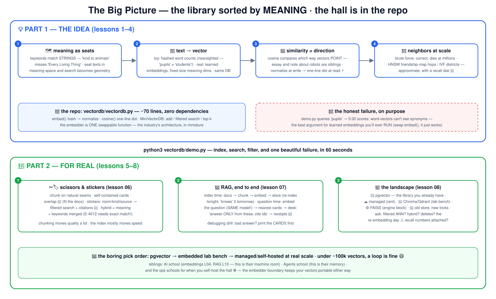

🗺️ Learn Vector Databases the school way
The library sorted by meaning — the machine under semantic search, RAG and
agent memory. Taught the school way: a real mini vector DB in the repo (~70 lines, pure
Python, zero dependencies) that you read in full — including one honest, deliberate failure
that explains why learned embeddings exist.
🔢 embeddings 📐 cosine
🏃 kNN & HNSW ✂️ chunking
🏷️ metadata filters 📖 RAG 🏬 the landscape
💡 Part 1 — THE IDEA (1–4)
keywords match strings; meaning needs seats 🗺️
text → coordinates: the toy way and the real way
similarity = direction (normalize, then dot) 🧭
millions of seats: the friendship map (HNSW) 🏃
🔧 Part 2 — FOR REAL (5–8)
read the database whole: 70 honest lines 🔬
scissors & stickers: chunking is the quality lever ✂️
RAG end to end, with YOUR page-finder 📖
pgvector → Pinecone: picking without a bake-off 🏬
# the 60-second wow — search by meaning, filters, and one honest failure:
git clone https://github.com/BaluRaut/learn-vectordb-school.git && cd learn-vectordb-school
python3 vectordb/demo.py🗺️ The big picture — one diagram, both worlds
Click for the 4K version .

🎓 The 8 lessons
One git branch = one idea; branch 05 contains lessons 01–05. The natural deep-dive
after the AI course 's embeddings (L04)
and RAG (L10) lessons — and the memory layer of the
Agents school .
🏬
The showcase: the product landscape —
pgvector, Pinecone-class, Chroma/Qdrant/LanceDB, FAISS, and your-old-store-with-new-tricks —
compared honestly, with the boring pick order.
📐 The lesson diagrams — follow the numbers
Blue = the idea, green = for real. Also on a
standalone page .
1 🗺️ Why vector DBsThe library sorted by MEANING — keywords match strings, not ideas.
📇 keyword catalog 'kind to animals' → match exact strings → ❌ 'Every Living Thing' missed strings, not meaning 1 🗺️ the meaning hall — a vector DB 1 seat the question (embed it) 2 find nearest seats fast, at any scale 3 ✅ 'Every Living Thing' zero shared words! 2 store millions of seats · return the k nearest · with stickers 🏷️ — that's the whole product
2 🔢 Text to vectorsGiving every text a seat — our honest toy vs learned embeddings.
🔤 toy: count words hash each word → bump 1 of 256 buckets → normalize 😬 nearsighted: shared WORDS 'pupils' ≠ 'students' (0.00!) 1 🧠 real: embedding model a trained network → 768-3072 dims where directions = MEANING ✅ 'pupils' sits beside 'students' across phrasing & languages 2 🗺️ the DB doesn't care vectors in, neighbors out — embed() is ONE swappable function (lesson 05) 3 ⚠️ the same-model rule: query and documents must use the SAME embedder — change it → re-embed everything
3 📐 SimilarityDirection beats distance — and the normalize-then-dot trick.
🧭 cosine: compare DIRECTIONS 10-page robot essay & 1-line robot note point the SAME way → 0.95 ✅ siblings meaning is a direction; length is volume 📢 1 📏 distance: compare POSITIONS the essay 'stands far' from the note → fooled by length — wrong verdict for text 2 ⚡ the trick: normalize at WRITE time → cosine = plain dot product at READ time one line, hardware-fast — our cosine() is just sum(x·y) because _normalize already ran 3
4 🏃 Nearest neighborsAsking everyone vs the friendship map (HNSW) — the recall dial.
🚶 brute force - exact compare with ALL N seats N=7k: fine · N=7M: 💀 1 🗺️ HNSW - friendship map local friends + pen-pals across the hall → log-ish greedy hops 2 🏘️ IVF - neighborhoods pre-cluster districts; search only the nearest few 3 🎯 the recall dial: speed ↔ % of TRUE neighbors found 95-99% recall at 100-1000× speedup is the standard trade — benchmarks without recall numbers are marketing 4
5 🔬 Build a vector DB70 honest lines: embed, cosine, store, filter, top-k.
1 🔢 embed() hash words → 256 dims → normalize · ← swap for a model call HERE embedder and store are separate jobs — by design 1 2 📐 cosine() one line: dot product (normalize made it cheap) 2 3 🗄️ MiniVectorDB add: embed + store (id, vector, TEXT, stickers) search: filter 🏷️ FIRST → score → sort → top-k missing on purpose: persistence, deletes, ANN — your homework 3 ~70 lines, zero dependencies — a database you can hold entirely in your head
6 ✂️ Chunking & metadataCards and colored stickers — the quality lever bigger than any index.
📚 400-page book can't sit in one chair ✂️ chunking - the craft natural seams · self-contained · ~hundreds of tokens · 10-15% overlap 🔁 1 🗂️ cards + stickers 🏷️ room:3A · kind:rules · source:handbook-p12 (receipts!) 2 ❌ too big: five topics, one murky seat ❌ too small: '…it must be returned' — WHAT must? chunking moves quality 2-5× · indexes move it 1.1× 3 🤝 hybrid search meaning-search misses 'E-4012'; keywords miss synonyms — run BOTH, merge (RRF) 4
7 📖 RAG wiringThe open-book exam, end to end — with OUR page-finder.
🗂️ index time - once, on change docs → ✂️ chunk → 🔢 embed → 🗄️ store (re-index tonight, 'knows' it tomorrow) 1 ❓ question time - every query embed the question (SAME model) → search k=4 (+ stickers 🏷️) → optional rerank 🧐 2 🪑 the desk: cards + 'answer ONLY from these, cite ids' → ✅ grounded answer with receipts 🧾 (AI school L08-L10, now with YOUR page-finder) debugging drill: bad answer? print the CARDS first — retrieval bug ≠ generation bug 3
8 🏬 The landscapepgvector, Pinecone, Chroma, FAISS — picking without a bake-off.
🐘 pgvector the library you already have — SQL + vectors, one backup 1 ☁️ managed - Pinecone & co the rented hall — scale without ops (the AWS build-vs-rent call) 2 🧪 Chroma · Qdrant · LanceDB the lab bench — developer-first, embedded to mid-scale 3 ⚙️ FAISS · hnswlib engine blocks, not databases — max control, zero ops help 4 🔎 your old store, new tricks OpenSearch/Redis/Mongo grew a vector column — one less system 5 the boring pick order: pgvector → embedded lab bench → managed/self-hosted at real scale · <100k vectors? a loop is fine 😄
Start Lesson 01 →
🏬 The landscape
📐 All 8 lesson diagrams
🧠 The AI course
{kind=link}